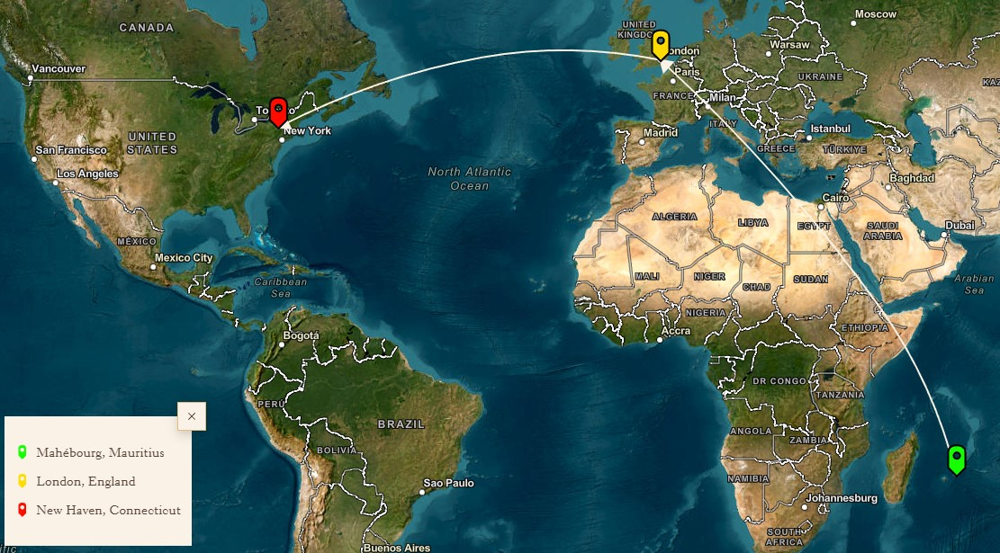
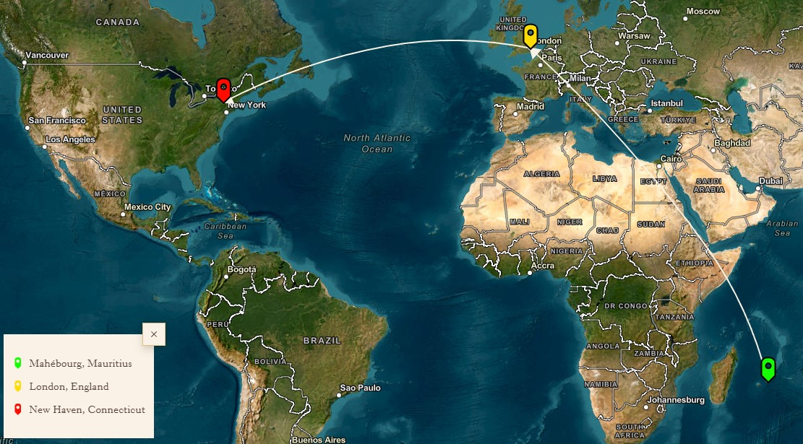

Novel : Silent Winds, Dry Seas
Deeply imbued with autobiographical elements, it is a coming-of-age story and a tale of emigration. But most of all, Silent Winds, Dry Seas is a love letter to Independence-era Mauritius. The story of Vishnu, the protagonist, is imbricated within a greater familial and historical context. From this first ancestor begins the sprawling tree that will become the Bhushan clan, a family simultaneously tethered and fractured by love, loyalty, honor, and the occasional court case to settle a land dispute. Vishnu’s narrative voice is funny and endearing; readers are invested in his character arc as he grows from a boy to a man.

Mapping of the Transatlantic Journey
 
